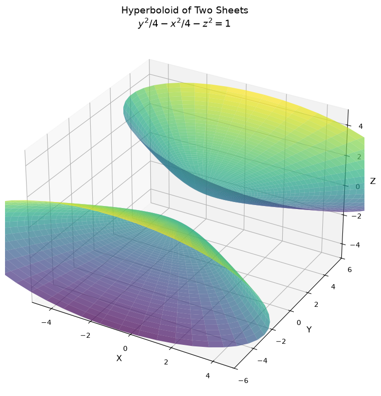
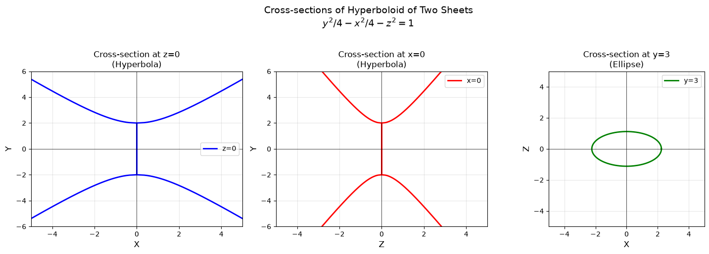
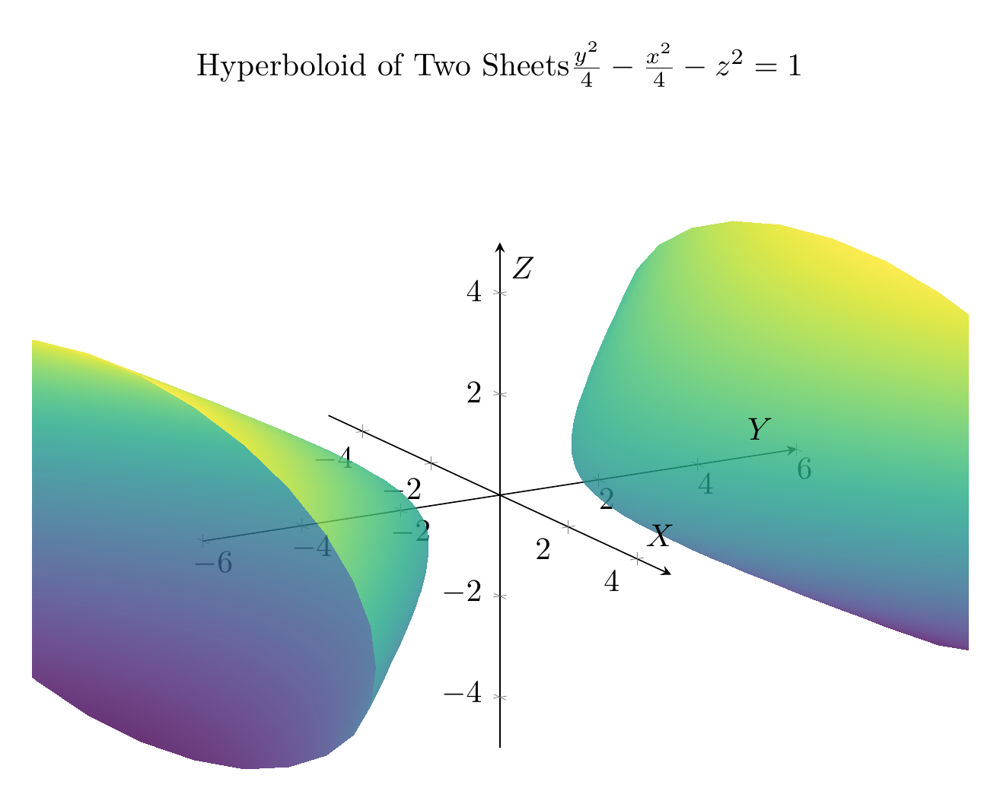
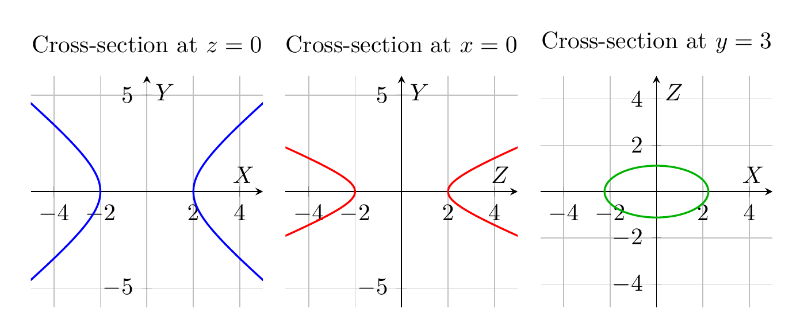

Path: mcma-Qwen3.5-397B-A17B/calculus-12.6.32/chat_20260823_213402_675326_utc_0800
Problem
Please solve the math problem in the image.

End of problem
Answer
# Solution: Reducing and Classifying the Quadric Surface
## Problem
Reduce the equation to one of the standard forms, classify the surface, and sketch it:
$$y^2 = x^2 + 4z^2 + 4$$
## Step 1: Reduce to Standard Form
Starting with the given equation:
$$y^2 = x^2 + 4z^2 + 4$$
Rearrange all terms to one side:
$$y^2 - x^2 - 4z^2 = 4$$
Divide both sides by 4 to obtain the standard form:
$$\frac{y^2}{4} - \frac{x^2}{4} - \frac{4z^2}{4} = 1$$
$$\boxed{\frac{y^2}{4} - \frac{x^2}{4} - z^2 = 1}$$
Or written with explicit denominators:
$$\frac{y^2}{2^2} - \frac{x^2}{2^2} - \frac{z^2}{1^2} = 1$$
## Step 2: Classify the Surface
**Classification: Hyperboloid of Two Sheets**
### Reasoning:
The standard form $\frac{y^2}{a^2} - \frac{x^2}{b^2} - \frac{z^2}{c^2} = 1$ with one positive term and two negative terms identifies this as a **hyperboloid of two sheets**.
### Key Features:
- **Center**: $(0, 0, 0)$
- **Axis of symmetry**: $y$-axis (the variable with positive coefficient)
- **Vertices**: $(0, \pm 2, 0)$ - found by setting $x = z = 0$
- **Domain**: The surface exists only when $|y| \geq 2$
- **Two separate sheets**: One for $y \geq 2$ and one for $y \leq -2$
### Cross-sections:
1. **In the $xy$-plane** ($z = 0$): $\frac{y^2}{4} - \frac{x^2}{4} = 1$ → Hyperbola
2. **In the $yz$-plane** ($x = 0$): $\frac{y^2}{4} - z^2 = 1$ → Hyperbola
3. **In planes parallel to $xz$-plane** ($y = k$, $|k| > 2$): Ellipses
## Step 3: Visualizations
The plots show:
**3D Plot (top figure)**: The complete hyperboloid of two sheets with:
- Upper sheet opening upward along the positive $y$-axis (starting at $y = 2$)
- Lower sheet opening downward along the negative $y$-axis (starting at $y = -2$)
- The two sheets are disconnected, with a gap between $y = -2$ and $y = 2$
**2D Cross-sections (bottom figure)**:
- **Left**: Cross-section at $z = 0$ showing a hyperbola in the $xy$-plane
- **Center**: Cross-section at $x = 0$ showing a hyperbola in the $yz$-plane
- **Right**: Cross-section at $y = 3$ showing an ellipse in the $xz$-plane
These cross-sections confirm the hyperboloid structure: hyperbolas in vertical planes and ellipses in horizontal planes.
$\boxed{\text{Hyperboloid of Two Sheets}, \frac{y^2}{4} - \frac{x^2}{4} - z^2 = 1}$
---


\documentclass[border=10pt]{standalone}
\usepackage{pgfplots}
\pgfplotsset{compat=1.18}
\usepgfplotslibrary{colormaps}
\begin{document}
\begin{tikzpicture}
\begin{axis}[
width=12cm,
height=10cm,
xlabel={$X$},
ylabel={$Y$},
zlabel={$Z$},
title={Hyperboloid of Two Sheets \\ $\frac{y^2}{4} - \frac{x^2}{4} - z^2 = 1$},
view={60}{20},
grid=none,
axis lines=center,
enlargelimits=false,
colormap/viridis,
z buffer=sort,
xmin=-5, xmax=5,
ymin=-6, ymax=6,
zmin=-5, zmax=5,
]
% Upper sheet
\addplot3[
surf,
domain=0:2,
y domain=0:360,
samples=30,
samples y=30,
opacity=0.8,
shader=interp,
] ({2*sinh(x)*cos(y)}, {2*cosh(x)}, {sinh(x)*sin(y)});
% Lower sheet
\addplot3[
surf,
domain=0:2,
y domain=0:360,
samples=30,
samples y=30,
opacity=0.8,
shader=interp,
] ({2*sinh(x)*cos(y)}, {-2*cosh(x)}, {sinh(x)*sin(y)});
\end{axis}
\end{tikzpicture}
\end{document}

\documentclass[border=10pt]{standalone}
\usepackage{pgfplots}
\pgfplotsset{compat=1.18}
\begin{document}
\begin{tikzpicture}
\begin{axis}[
width=5cm,
height=5cm,
xlabel={$X$},
ylabel={$Y$},
title={Cross-section at $z=0$},
grid=both,
axis lines=center,
xmin=-5, xmax=5,
ymin=-6, ymax=6,
domain=-6:6,
samples=200,
]
% Hyperbola branches: x = +/-sqrt(y^2 - 4)
\addplot[blue, thick, domain=2:6] {sqrt(x^2 - 4)};
\addplot[blue, thick, domain=2:6] {-sqrt(x^2 - 4)};
\addplot[blue, thick, domain=-6:-2] {sqrt(x^2 - 4)};
\addplot[blue, thick, domain=-6:-2] {-sqrt(x^2 - 4)};
\end{axis}
\end{tikzpicture}
\begin{tikzpicture}
\begin{axis}[
width=5cm,
height=5cm,
xlabel={$Z$},
ylabel={$Y$},
title={Cross-section at $x=0$},
grid=both,
axis lines=center,
xmin=-5, xmax=5,
ymin=-6, ymax=6,
domain=-6:6,
samples=200,
]
% Hyperbola: z = +/-sqrt(y^2/4 - 1)
\addplot[red, thick, domain=2:6] {sqrt(x^2/4 - 1)};
\addplot[red, thick, domain=2:6] {-sqrt(x^2/4 - 1)};
\addplot[red, thick, domain=-6:-2] {sqrt(x^2/4 - 1)};
\addplot[red, thick, domain=-6:-2] {-sqrt(x^2/4 - 1)};
\end{axis}
\end{tikzpicture}
\begin{tikzpicture}
\begin{axis}[
width=5cm,
height=5cm,
xlabel={$X$},
ylabel={$Z$},
title={Cross-section at $y=3$},
grid=both,
axis lines=center,
xmin=-5, xmax=5,
ymin=-5, ymax=5,
domain=0:360,
samples=200,
axis equal,
]
% Ellipse: x^2/5 + z^2/(5/4) = 1
\addplot[green!70!black, thick] ({sqrt(5)*cos(x)}, {sqrt(5/4)*sin(x)});
\end{axis}
\end{tikzpicture}
\end{document}

End of answer